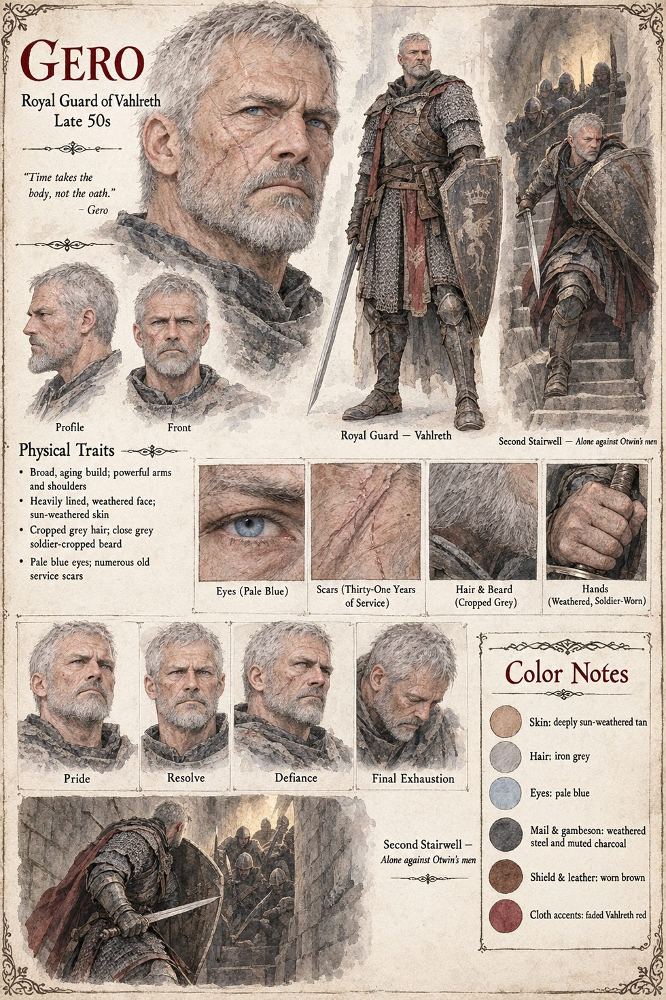

Gero
Royal guard of Vahlreth, thirty-one years in service · held the second stair · late fifties by his sheet
An old man by the standards of his own trade, thirty-one years in the royal guard and unremarkable by his own account, who has guarded three kings he liked rather less than he likes this one's daughter. On the night Vahlreth falls he takes the second stair, having decided sometime in the last hour, without troubling to announce it to anyone, that the arithmetic of his life has come out roughly even. He does not so much fight the first man through the door as simply refuse, with everything left in his body, to let him pass. It costs the duke's men four full minutes. It costs Gero everything he has left to spend. Hildegund has the word half formed behind her teeth, three syllables that would have ordered him to come with them and might have cost all four of their lives rather than one; she says nothing, and Gero, who had not been waiting for permission, would not have thanked her for it regardless. Four minutes, the manuscript says, was enough.
She does not weep for him where anyone can see, and tells herself it is dignity and not the plainer truth, that a girl raised to be a queen has been trained out of the habit before she was old enough to notice it going. The Archival Log lists him among the costs of the contested interval as a royal guard. The manuscript gives him his thirty-one years and his stair; the sheet's late fifties, close grey hair and beard, pale-blue eyes, old scars, worn mail with a crowned shield and red cloak, and the line it prints beside him, “Time takes the body, not the oath”, are its own.
“Time takes the body, not the oath.”